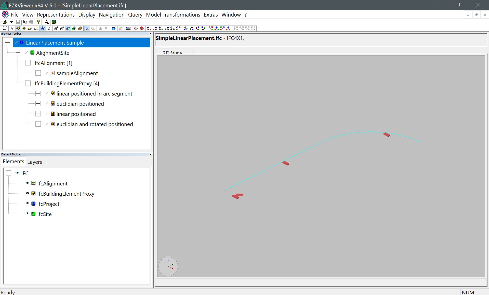

Annex E Examples - LinearPlacement_1
Example overview
Intent
This scenario is a sample for local and linear placements along an alignment curve. An IfcLinearPlacement defines a point in space in dependency to a referenced space curve (often IfcAlignmentCurve). The euclidian coordinates can be calculated out of the station/referent along the given alignment curve and related offsets in longitudinal, lateral, and vertical direction. The sample contains an IfcBuildingElementProxy product represented by a cuboid. This element is positioned in several ways: - IfcLocalPlacement: the Euclidian points are directly given by x, y, and z-value. - IfcLinearPlacement: the position is defined by the distance along the referenced curve and the orientation (which then contains information about offsets).
Prerequisites
This scenario builds upon following other scenarios: - none
Content
This scenario builds upon following scenarios:
- project structure
- IfcProject
- IfcSite
- default unit assignment
- IfcUnitAssignment
- IfcSIUnit
- alignment
- IfcAlignment
- core spatial structure
- IfcProject
- IfcSite
This scenario might be extended by the following concepts: - GeoRef (see Georeferencing_1 scenario) - advanced spatial structure - Element assemblies and aggregations - advanced geometry representations
Supporting files
Following files correspond to this scenario:
| Filename | Description |
|---|---|
UT_LinearPlacement_1.ifc |
the exported content as IFC document |
UT_LinearPlacement_1_1.png |
screenshot from the KIT FZK Viewer |
UT_LinearPlacement_1_2.png |
screenshot from the KIT FZK Viewer |
UT_LinearPlacement_1_3.pdf |
drawing of intended content |
Images
Figure 8abe0516-ae7f-4d0d-a378-4553479ad24e  Figure c08e1c0c-ddb9-470a-94a1-2312afb81092 Figure 3e9086fa-65aa-415f-9361-575a453db31d
{kind=link}
{kind=link}
{kind=link}
IFC-SPF source
ISO-10303-21;
HEADER;
FILE_DESCRIPTION(('ViewDefinition []'), '2;1');
FILE_NAME('', '2019-09-19T10:23:29', (''), (''), 'Processor version 5.0.0.0', '', '');
FILE_SCHEMA(('IFC4X3_RC2'));
ENDSEC;
DATA;
/* IfcRoad WP5 Prototypical Implementation */
/* Author: Sebastian Esser; Technical University of Munich, Chair of Computational Modeling and Simulation and Autodesk. sebastian.esser@tum.de */
/* Please note: This sample is partially hand-coded and may contain mistakes. */
/* Version: 02 */
/* !!! This sample contains IFC4x1 entities. However, from IFC4X1 to IFC4x2, several changes were applied to IfcLinearPlacement !! */
/* --- --- --- --- --- --- --- --- */
/* -- Base setup: project, credits, units, ... */
#1=IFCPROJECT('2dGnaVksj48hS2oyo_XxlK',#2,'LinearPlacement Sample',$,$,$,$,(#15),#7);
#2=IFCOWNERHISTORY(#5,#6,$,.ADDED.,1549899150,$,$,0);
#3=IFCPERSON($,'Esser','Sebastian',$,$,$,$,$);
#4=IFCORGANIZATION($,'Technical University of Munich',$,$,$);
#5=IFCPERSONANDORGANIZATION(#3,#4,$);
#6=IFCAPPLICATION(#4,'1.0','TUM_CMS_SE','notDefined');
#7=IFCUNITASSIGNMENT((#8,#9,#10,#11));
#8=IFCSIUNIT(*,.LENGTHUNIT.,$,.METRE.);
#9=IFCSIUNIT(*,.PLANEANGLEUNIT.,$,.RADIAN.);
#10=IFCSIUNIT(*,.AREAUNIT.,$,.SQUARE_METRE.);
#11=IFCSIUNIT(*,.VOLUMEUNIT.,$,.CUBIC_METRE.);
/* site and alignment placement */
#12=IFCLOCALPLACEMENT($,#13);
#13=IFCAXIS2PLACEMENT3D(#14,$,$);
#14=IFCCARTESIANPOINT((0.,0.,0.));
/* representation context is necessary to have geometric product representations */
#15=IFCGEOMETRICREPRESENTATIONCONTEXT($,'Model',3,$,#13,$);
/* -- setup a simple IfcSite containing the products and the alignment curve */
#16=IFCSITE('3_lzWZ4lL1xBtgb_k89blG',#2,'AlignmentSite','Samples for IfcLocalPlacement and IfcLinearPlacement',$,#12,$,$,$,$,$,0.,$,$);
#17=IFCRELAGGREGATES('1oEWrejW14$hUYRDBPoxmo',#2,$,$,#1,(#16));
#18=IFCRELCONTAINEDINSPATIALSTRUCTURE('2FzbCnjPP0pOSTW0cCcjnt',#2,$,$,(#19,#90,#100,#110,#120),#16);
/* --- --- --- --- --- --- --- --- */
/* -- IfcAlignment defining the linear referencing system */
#19=IFCALIGNMENT('3RGarZbNb8aQVemB05KsyD',#2,'sampleAlignment','Alignment with 2 horiz segments and 0 vertical segments',$,#12,$,#20,$);
#20=IFCALIGNMENTCURVE(#21,$,$);
#21=IFCALIGNMENT2DHORIZONTAL($,(#25,#28));
/* Horizontal segments */
#23=IFCLINESEGMENT2D(#24,1.5707963267948966,1000.);
#24=IFCCARTESIANPOINT((0.,0.));
#25=IFCALIGNMENT2DHORIZONTALSEGMENT($,$,$,#23);
#26=IFCCIRCULARARCSEGMENT2D(#27,1.5707963267948966,785.39816339744823,500.,.F.);
#27=IFCCARTESIANPOINT((0.,1000.));
#28=IFCALIGNMENT2DHORIZONTALSEGMENT($,$,$,#26);
/* Vertical segments */
/* --- --- --- --- --- --- --- --- */
/* -- Geometry of product*/
/* Note: The placement point is NOT the center of mass! */
#50=IFCCARTESIANPOINTLIST3D(((10.,20.,50.),(0.,20.,50.),(10.,0.,50.),(10.,0.,50.),(0.,20.,50.),(0.,0.,50.),(10.,0.,0.),(0.,0.,0.),(10.,20.,0.),(10.,20.,0.),(0.,0.,0.),(0.,20.,0.),(0.,0.,50.),(0.,0.,0.),(10.,0.,50.),(10.,0.,50.),(0.,0.,0.),(10.,0.,0.),(0.,20.,50.),(0.,20.,0.),(0.,0.,50.),(0.,0.,50.),(0.,20.,0.),(0.,0.,0.),(10.,20.,50.),(10.,20.,0.),(0.,20.,50.),(0.,20.,50.),(10.,20.,0),(0,20.,0),(10.,0.,50.),(10.,0.,0.),(10.,20.,50.),(10.,20.,50.),(10.,0.,0.),(10.,20.,0.)),$);
#51=IFCTRIANGULATEDFACESET(#50,$,.T.,((1,2,3),(4,5,6),(7,8,9),(10,11,12),(13,14,15),(16,17,18),(19,20,21),(22,23,24),(25,26,27),(28,29,30),(31,32,33),(34,35,36)),$);
#52=IFCSHAPEREPRESENTATION(#15,'Body','Tessellation',(#51));
#53=IFCPRODUCTDEFINITIONSHAPE($,$,(#52));
/* -- IfcProduct instance with IfcLinearPlacement */
#90=IFCBUILDINGELEMENTPROXY('2uEmTbIVTEr94hFPqz1_N9',#2,'linear positioned in arc segment',$,$,#91,#53,$,$);
/* -- IfcLinearPlacement: station 600m, 14m lateral offset, 0m vertical offset, 0m logitudinal offset, measurement should be applied the horizontal projection (has no impact in this sample since no vertical alignment has been defined) */
#91=IFCLINEARPLACEMENT($,#20,#92,#93,$);
#92=IFCDISTANCEEXPRESSION(600.,-14.,0.,0.,.T.);
#93=IFCORIENTATIONEXPRESSION(#94,#95);
#94=IFCDIRECTION((1.,0.,0.));
#95=IFCDIRECTION((0.,0.,1.));
/* -- IfcProduct instance with IfcLinearPlacement, placement at arc segment */
#100=IFCBUILDINGELEMENTPROXY('2uEmTbIVTEr94hFPqz1_M9',#2,'linear positioned',$,$,#101,#53,$,$);
/* -- IfcLinearPlacement for #100: */
#101=IFCLINEARPLACEMENT($,#20,#102,#103,$);
#102=IFCDISTANCEEXPRESSION(1500.,-14.,0.,0.,.T.);
#103=IFCORIENTATIONEXPRESSION(#104,#105);
#104=IFCDIRECTION((0.,0.,1.));
#105=IFCDIRECTION((1.,0.,0.));
/* -- IfcProduct instance with IfcLocalPlacement - no rotation */
#110=IFCBUILDINGELEMENTPROXY('3$fw5brl95uh4EJX8NGPg7',#2,'euclidian positioned','localPos',$,#111,#53,$,$);
/* -- IfcProduct instance with local/euclidian placement */
#111=IFCLOCALPLACEMENT($,#112);
#112=IFCAXIS2PLACEMENT3D(#113,#114,#115);
#113=IFCCARTESIANPOINT((100.,0.,0.));
#114=IFCDIRECTION((1.,0.,0.));
#115=IFCDIRECTION((0.,0.,1.));
/* -- IfcProduct instance with IfcLocalPlacement - rotated */
#120=IFCBUILDINGELEMENTPROXY('3$fw5brl95uh4EJX8NGPf7',#2,'euclidian and rotated positioned','localPos + Rotation',$,#121,#53,$,$);
/* -- IfcProduct instance with local/euclidian placement - rotated */
#121=IFCLOCALPLACEMENT($,#122);
#122=IFCAXIS2PLACEMENT3D(#123,#124,#125);
#123=IFCCARTESIANPOINT((100.,20.,0.));
#124=IFCDIRECTION((0.4142,0.4142,0.));
#125=IFCDIRECTION((0.,0.,1.));
ENDSEC;
END-ISO-10303-21;